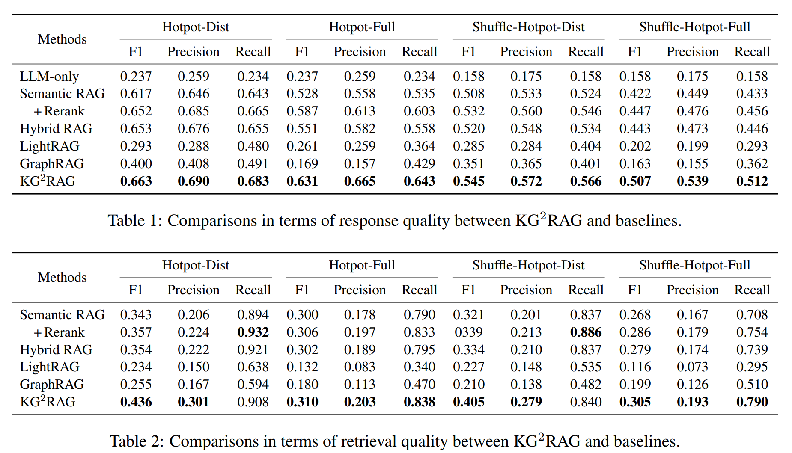
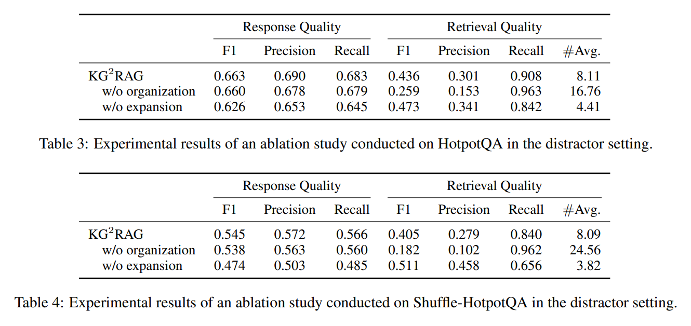
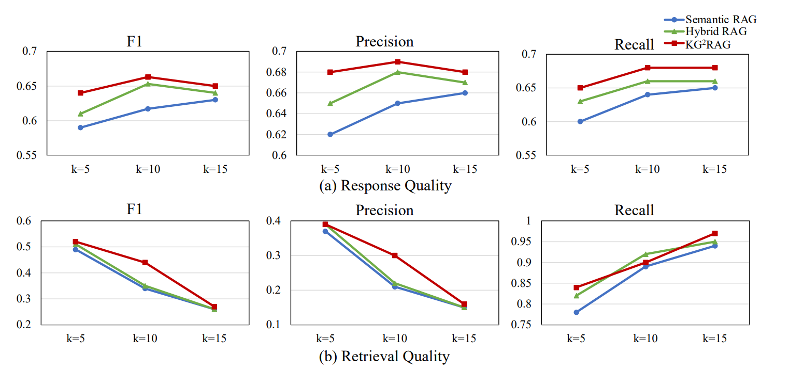
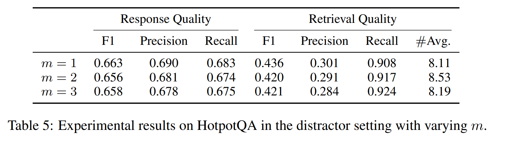
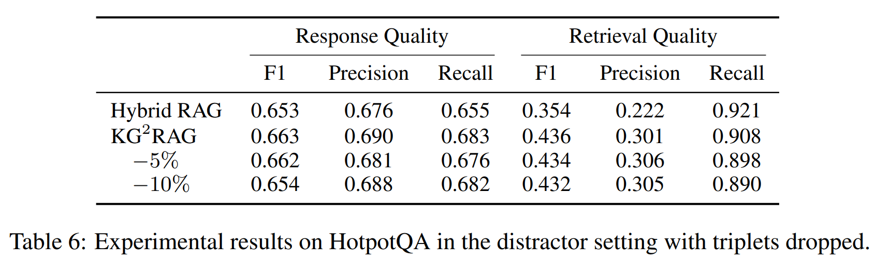

Knowledge Graph Guided Retrieval Augmented Generation 论文阅读
写在开头
该文是 RAG（Retrieval-augmented generation 检索增强生成）领域的一篇论文，发表于 NAACL 2025.
原文链接：Knowledge Graph-Guided Retrieval Augmented Generation
相关工作
重排序模型
重排序模型（通常是 Cross-Encoder）会让问题和文档“面对面”。
- 工作方式： 它把“用户问题”和“候选文档”拼接在一起，作为一个整体输入进模型（比如 BERT）。
- 计算逻辑： 模型内部的注意力机制（Attention）会逐字逐句地对比两者。
- 优点： 极度精准。它能捕捉到两者之间极其细微的语义交互。
- 缺点： 极慢。它无法预先计算。如果有 100 万个文档，将不可能把问题和每个文档都拼在一起跑一遍深度模型。
密集检索模型
密集检索通过模型将问题和文档分别转化成向量。
- 工作方式： 就像把问题和每个文档都变成坐标系里的一个“点”。
- 计算逻辑： 在搜索时，它不让问题和文档直接见面，而是计算两个向量之间的距离（如余弦相似度）。
- 优点： 极快。因为文档向量可以提前算好存进数据库（Vector DB），搜索时只需要一次简单的数学计算。
- 缺点： 会丢失细节。因为文档被强行压缩成了一个固定长度的向量，细微的语义差别可能被磨平了。
两者对比
| 特性 | 密集检索 (Dense Retrieval) | 重排序 (Reranking) |
|---|---|---|
| 模型架构 | 双塔 (Bi-Encoder) | 交叉塔 (Cross-Encoder) |
| 语义交互 | 浅层（向量距离计算） | 深层（全注意力机制机制交互） |
| 计算速度 | 极快（毫秒级检索百万数据） | 慢（只能处理几十到几百个数据） |
| 输入方式 | 问题和文档独立编码 | 问题和文档拼接后共同输入 |
| 主要用途 | 从海量数据中“捞出”候选集 | 对少量候选集进行“精排” |
也就是说，现代 RAG 链路一般是关键词/密集检索 (初筛 Top 100) -> Reranker (精排 Top 5) -> 送给大模型生成回答。
本文工作
整体理解
本文是一种混合的 RAG 方法，核心思想是：根据问题，在执行基于语义的检索以提供初始片段之后，KG2RAG 采用知识图谱引导的片段扩展过程和片段组织过程，以产生组织良好的 Prompt，为 LLM 提供相关且重要的知识。
更具体地来说，KG2RAG 整体工作分为5步：
- 离线预处理：把文档切成小块、建立文本块与知识图谱（KG）的映射关系。
- 知识增强检索：先使用密集检索、重排序等技术找出几个最相关的种子文本块。
- 图引导扩展：以这些种子块关联的实体为起点，在知识图谱上找邻居，取回那些虽然语义向量不一定最接近、但逻辑上紧密相关的其他块。
- 上下文组织处理：过滤掉冗余信息，以知识图谱为骨架，将散乱的文本块重新排列组合成逻辑通顺、内部连贯的段落。
- 生成：将整理好的、具有高度连贯性的上下文和用户问题一起喂给大模型（LLM），最终生成答案。
技术细节
文档离线处理
- 根据文本中句子和段落的结构，按照预先设计好的划分数量，将所有的文本处理为 $n$ 个文本块：
- 从文本块中用 LLM 提取实体和关系形成子图，最后形成一个完整的 KG：其中，$h,r,t$ 代表头实体、联系、尾实体。$c$ 代表产生这个三元组的文本块。
KG 增强检索
基于语义的检索
$s$ 是指通过密集检索模型，输入问题，为每个文本块打出相似性分数。
根据分数可以选出 Top-K 个文本块，形成 $\mathcal{D}_q$，这些就是种子文本块。
图引导扩展
首先，使用种子块找到对应的 KG 子图：
之后，遍历 $\mathcal{G}_{q}$ 的 m 跳邻居得到扩展子图 $\mathcal{G}_{q}^{m}$，遍历算法可通过 BFS 完成.
给定 $\mathcal{G}_{q}^{m}$ 后，就可以找出扩展后的文本块：
KG 文本组织
过滤
使用 $\mathcal{G}_{q}^{m}$，可构建出一个无向图：
由于我们找出来的是一个个子图，所以构建出来的这个无向图原生就可以划分出 $p$ 个连通分量，记为 $\mathcal{B}_i, 1 \leq i \leq p$。
每一个连通分量内部，由于冗余知识的存在，会出现多边连同一节点（实体）的情况，可以使用 MST（最大生成树），删掉多余边（信息），保留关键信息：
这样做的道理本质是边权就是相似度分数，MST 可以留下高相似，去除低相似（删边）。但不损失关键实体信息（留点）。
组织
对每个 $\text{MST } \mathcal{T}_i$，为大模型组织出两种表示：
- 文本表示：选择权重最高的边作为根，并使用深度优先搜索（DFS）算法将所有与这些边相连的块连接起来，以形成连贯的段落。
- 三元组表示：直接按 $\langle h, r, t \rangle$ 格式拼接 MST 中的所有边。
最后，为 $\text{MST } \mathcal{T}_i$ 进行排序，使用重排序模型：
其中，$C$ 就是重排序模型，$conc$是提取函数，提取出 MST 的三元组。
计算出相似性分数后，就可以把每个 MST 表示以降序的方式排列，选出 Top-k 个 MST 表示，然后和问题一起提供给大模型进行解答。
本文实验
实验设置
数据集：
- HotpotQA： 一个广泛使用的多跳问答数据集，要求模型跨越多个文档进行推理。
- 变体数据集： 为了减轻大模型（LLM）预训练先验知识的影响，作者还构建了 HotpotQA 的变体，以更纯粹地测试检索系统的有效性。
评测设置：
- Distractor（干扰项模式）： 每个问题配有 2 个金标（正确）段落和 8 个干扰段落。
- Fullwiki（全库模式）： 系统需要从整个维基百科（约 500 万篇文章）中检索相关信息，难度更高。
对比基线 (Baselines)：
- Semantic RAG： 传统的基于向量相似度的检索。
- Hybrid RAG： 结合了关键词和向量检索的方法。
Graph-based RAG： 现有的图增强 RAG 方法（如 GraphRAG, LightRAG）。
评估指标：
- 回答质量（Response Quality）： 采用 F1 分数、精确度（Prec.）和召回率（Recall）。
- 检索质量（Retrieval Quality）： 评估找到支撑事实（Supporting Facts）的准确性。
F1 分数、精确度、召回率的理解可以举一个例子：警察抓逃犯。
假设城里有 10个真正的逃犯，警察一共抓了 8个人，其中 6个是真的逃犯，2个是抓错的好人。
精确度（抓得准不准）：
召回率（找得全不全）：
F1 分数 （综合实力）：
实验结果

后续实验
- 组织模块对 LLM 回复质量有所提升，对检索质量大幅提升。
扩展模块对 LLM 回复质量提升较大，对检索质量有所提升。

Top-K 中 K 值在 5 / 10 时，效果最好。过大的 K 值会提升召回率但不会对 LLM 输出有显著效果。

图扩展时找的邻居跳数 m 为 1 最合适

KG2RAG 的鲁棒性较好，即使从质量不好的 KG 中进行检索，效果也不会显著下降。
